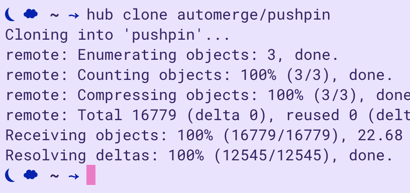

End User Programming with the 'CLUI'
-- Zach Sherman
The Problems with Current CLIs and UIs
Command line interfaces (CLIs) have known problems with approachability
and discoverability. The only way to find out which command you want is
to hit 'tab' and pray, google it, or to attempt to decipher the
output of a --help flag. And they don't do a great job
of representing output visually— it's hard to perform operations
like editing a photo or composing music. CLIs do allow quick
interactions and a near-infinite number of (often composeable) commands,
meaning they are still used heavily for tasks that involve manipulating
plain text (i.e. programming).
Discovering commands and their usage via --help flags
requires the user to mentally parse through the list of commands,
work that could easily be offloaded onto the UI.

running hub clone <user>/<repo> is a lot
faster than navigating to GitHub and manually downloading a
repository
Graphical user interfaces (GUIs), on the other hand, offer the ability to represent output graphically rather than through plain text. However, GUIs have problems with scalability— too many potential operations yields a cluttered UI with often-inscrutable icon-buttons:
So many buttons! To be fair to Ableton, they have invested serious effort in making this interface more discoverable than most: e.g. the box in the lower left corner fills up with a description of how to use whatever element the cursor is hovering over at any given time.
or, even worse, icon-buttons that are supplemented by menu-diving:
There are problem twenty or so top-level menus in this view alone, each with uncountably many nested sub-menus.
Power-users of these interfaces (usually multimedia-editing software) will often buy special controllers or keyboard overlays that allow them to replace menu-diving and clicking icon-buttons with pressing various key or knob combinations.
Ableton Push 2- a nearly $1,000 controller that ostensibly enables one to focus on making music, not clicking around the UI
Photoshop keyboard overlay
Since power-users often turn to CLIs (for programming tasks) or tactile controllers (for media production) as GUI-replacements, it's clear that point-and-click GUIs in there current form at least somewhat hinder human productivity and creativity.
How the 'CLUI' is Different
A couple weeks ago the folks at replit posted an article exploring a synthesis of the CLI and GUI that purportedly compensates for the shortcomings of each to yield something like an ideal UI paradigm. Their proposal boils down to a command line interface with a few added elements. A (clickable) dropdown menu that suggests commands based on a fuzzy-search of the current input aims to fix the low discoverability of traditional CLIs.
 Nice little suggestions dropdown will have you never struggling with
Nice little suggestions dropdown will have you never struggling with
—-help again.
Second, most commands return a form component with labeled fields that
enables what they call higher 'interactivity'. The
'cancel/update' option in this form is far more usable than in
current CLIs, which often just say
Are you sure you want to do this? Press 'Y' to proceed.
or don't even ask. Using form elements also allows clearer
descriptions of acceptable input than current CLIs (which give you
nothing) or even the suggestions dropdown above.
 They add form components to capture additional input in between
running a command and receiving an output. It is unclear what determines
whether an argument should be accepted via the command line (as
'EXPLORER' is above) or via a form component (as
'tangert' is above). Perhaps arguments that follow flags are
accepted either way.
They add form components to capture additional input in between
running a command and receiving an output. It is unclear what determines
whether an argument should be accepted via the command line (as
'EXPLORER' is above) or via a form component (as
'tangert' is above). Perhaps arguments that follow flags are
accepted either way.
In the article they also discuss the necessity of including arbitrary graphics (e.g. photos, videos, sound files) as potential outputs, but this is not included in their demo.
The article closes by positing that this 'CLUI' paradigm could eventually enable true end-user programming by allowing users to alias and compose commands on top of an interface that retains the scalability of CLIs while adding discoverability with a robust automatic suggestion system and visualization via the ability to render non-text graphics. According to this vision, end-user programming essentially means accessible, discoverable shell scripting with the ability to represent output graphically and possibly with a better UI for piping inputs to outputs (though this is not mentioned).
The CLUI Must Go Further
I believe that the end-user programming paradigm is essential to unlocking a more creative, productive relationship with the technology in our lives, so I want to examine what kind of end-user programming is enabled by the CLUI paradigm proposed above and how it could be extended towards a more radical transformation of human-computer interaction.
Let's start with some criteria I have for evaluating any system that claims to be end-user-programmable:
- The user should be able to compose commands (pipe outputs to inputs) and run them however they wish (alias commands to other phrases or UI elements).
- The user should be able to connect the given system to any other programmable system.
- The user should be able to customize the look and feel of every aspect of the system.
I also think the paradigm of local-first software is crucial to any discussion of end-user programming because of its prioritization of user control over application data. However, here I focus more on what the interface is rather than how it manages data.
I assume the first benchmark (alias, compose commands) is uncontroversial in the end-user programming world. The second benchmark requires that the user be able to do anything they want with whatever data/service they are using, which should be similarly uncontroversial. In today's world however, meeting this requirement is depressingly difficult. As I see it, the underlying political/economic pressures that result in closed-source code and locked-down APIs are bigger hurdles to meeting this goal than any design problems. With regards to the third benchmark, I could devote an entire article to the importance of personal aesthetics. For now I will simply say that we are aesthetic beings as much as we are logical ones— just as we should be able to write custom logic that fits our unique ways of thinking and working, we should be able to create custom UIs and aesthetics that do the same.
The replit CLUI proposal mostly meets the first goal and fails to meet the second two. Though I have already mentioned the obstacles blocking the second goal, a quick fix for any prospective CLUI-builder would be to allow the user to add arbitrary custom CLUI commands written in a proper programming language with access to some sort of IO and networking. For now however, I'll focus more on the third goal— how do we make the 'UI' in 'CLUI' as extensible and composeable as the 'CL'?
Some Modest Proposals
An obvious place to start would be to expose style settings via the
CLUI itself. I should be able to run
set! background-color and access a color-picker that
changes the background color. The same goes for any color or font choice
in the entire interface. In fact why not include a special command that
exposes all of the css for whatever components make up the CLUI? One
could build a CSS editor plugin that (in the CLUI spirit of robust
descriptions and suggestions) describes and auto-suggests options for
every parameter. If done well, this little editor could even be a great
way for people to learn basic CSS. Since replit is already a code editor
built especially for learning, I imagine this would be a natural
extension to their version of a CLUI.
One could even extend this logic to scripting the CLUI itself— learn any programming language by using it to control this well-defined interface! Eventually you move from scripting to building your own CLUI components. And if the API for building those components is designed for maximum simplicity, this could be an ideal way to learn a language. You already know what you want the script to do and the API is right there guiding your hand, so you can just focus on learning the new syntax and build your own little commands and widgets at the same time. Aside: I'm tired of programming language tutorials starting off with doing math or manipulating lists of strings I don't care about— give me the ability to build my own tools from the start! And no I won't listen to anyone who says UI-building is too hard as a first lesson; React does it and so can we.
How you might define a new command
People should also be able to customize the layout of the interface itself— every CLUI should have a way to split the UI into separate panes (something like tmux but for CLUIs not CLIs). Replit's demo allows you to mock sending an email to an (auto-suggested) contact. What if I want to repeat this action so often that typing out the entire command becomes a hindrance? And what if I want to view the output of some other command, like a calendar lookup, while I compose the email? If we want a truly programmable UI we need to be able to create separate CLUI panes and optionally 'pin' certain outputs to those panes at will. The CLUI actually has a significant advantage over CLIs (and tmux) in this realm because it can handle mouse input, which could create a much more intuitive pane-manipulating interface than keyboard commands. I imagine this would look something like an 'add pane' button that appears when you hover over an edge of each current pane and drag handles that would allow you to resize and reposition the pane however you'd like.
A quick sketch of how panes could work within a CLUI.
Furthermore, (as mentioned above) you should be able to define custom
UI components that implement any arbitrary command. The
replit demo shows that
the email <contact> command returns a form to compose
an email, but theoretically any command could return a corresponding
form. Because these require a very limited range of necessary elements
(form elements and row/column containers), I can imagine an accessible
DSL (as always with robust descriptions and auto-suggestions) that would
allow anyone to write a little custom email-sending component. Or a
custom git button that prompts you for a commit message and
automatically commits all your code changes. GUI components like these
are useful for oft-repeated tasks or streaming incoming data— let's
invite the user to decide what operations they would like to GUI-ify by
exposing a clean way to build your own components. The CLUI should be
self-manipulable— in the same way that you can
modify Lisps with Lisp macros, you should be able to modify your CLUI via a CLUI-like interface.
How we might define a simple input component
I know I promised not to talk about it, but this gets really exciting if you allow users to connect to external services. Imagine being able to write a two-line API call that could stream incoming Slack messages, manipulate and filter them however you want, and display them in a certain pane with a little custom quick-reply component that only appears when you're @mentioned or receive a direct message. If you wanted to do this today, you'd have to build an entire app and it still would be stuck in it's own window. Using a multi-pane CLUI as the basis for a programmable interface yields much lower development times and much higher utility, since the extension is seamlessly integrated into your primary workspace.
Now imagine this sort of flexibility of interaction for every service that you use. This sort of interface would be almost like a DIY operating system. It would knit together all your apps in exactly the way you want, except you could build it in hours not months, and all your apps and data would be infinitely interoperable and composeable because all the data would be easily accessible, not isolated in separate executable binaries.
This vision for user-interaction would be incredibly difficult to realize in today's world of walled gardens and locked or undocumented APIs. Though, if one is willing to write custom logic for every integration, I imagine it wouldn't be that hard to build functions that take in a service's username/pw, abstract over an API, and return a list of commands/data for that service (Zapier et al. have done this pretty effectively).
 How you might display your slack messages
How you might display your slack messages
Integrating open, scriptable services and extensible is crucial to blurring the line between using a tool and programming it, erasing the distinction between user and programmer (shhhh don't tell HackerNews), and eventually creating computer interactions that maximize productivity and creativity by allowing users complete control over the terms of interaction (the interface) while remaining approachable and discoverable. While we can't control what APIs and integrations are open and accessible, we can build on the CLUI paradigm and begin to explore the possibilities for fully customizable, extensible interfaces.
So, three things I'd like to see from anyone building CLUIs today are:
- let users build their own UI components and commands (not just alias and compose other commands)
- use configureable sticky panes to allow quick access to most-used commands / components
- give users complete control over the aesthetics of the interface
I'm working on a reusable React component in which I intend to implement these goals here, but in all honesty I might scrap it and build it with a framework I actually enjoy using (Clojurescript or Elm or Svelte if you're wondering). If you have thoughts about any of this, want to build something cool with me, or want to argue with me over why we shouldn't grant users so much control over the tech that they use, hit me up: zach@anemone.es.
Other misc. thougths:
- Replacing menu-diving with fuzzy-search dropdowns is an improvement but on its own is not a paradigm shift. You're making the experience of sifting through menus more efficient, not eliminating the idea of a menu altogether. I believe the latter is preferable but is probably impossible while we're still stuck with mouse-keyboard-screen hardware interfaces.
- Right now the CLUI is more a replacement for the CLI than the GUI. Even if all these prototypes/ideas were fully built out, we'd still have many unanswered UI questions for building media-manipulation software. I.e. how could you build Illustrator with a CLUI? I don't think it's impossible, would just need to extend the protocol for interaction beyond just: enter text → fill out form → output.
- Also, the original article does not discuss this, but the CLUI could improve significantly on existing undo-redo workflows because it maintains a continuously visible history of commands. Each command in the history could have an undo/redo button associated with it. Rather than having to undo every single recent action until you get to the one you want to undo, you could granularly undo and redo commands at any point in the history.